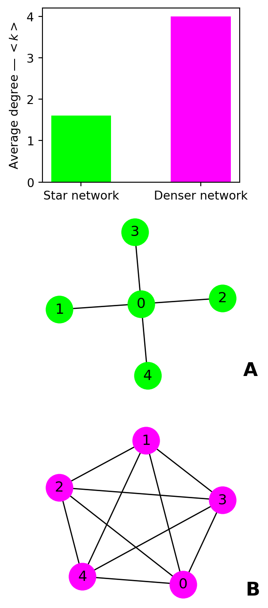
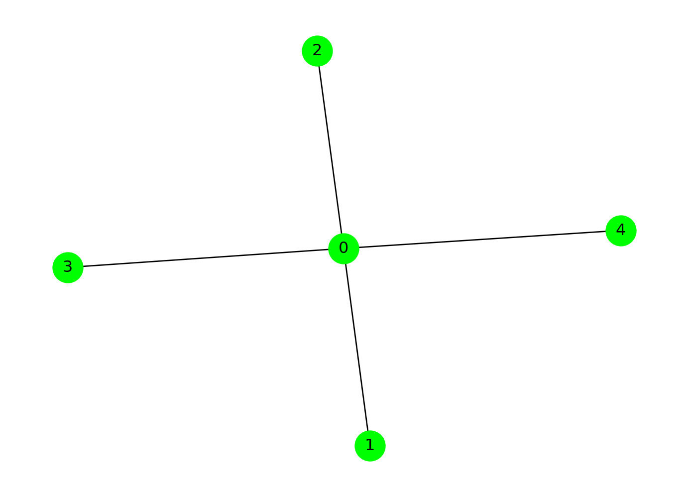
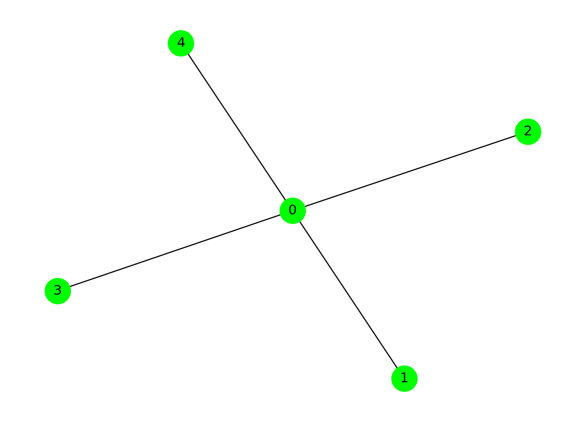

Code
# load the necessary libraries
from collections import Counter
import numpy as np
import matplotlib.pyplot as plt
import pandas as pd
import networkx as nxdegree, degree distribution, centrality, connected components, clustering
# load the necessary libraries
from collections import Counter
import numpy as np
import matplotlib.pyplot as plt
import pandas as pd
import networkx as nxg0 = nx.Graph()
g0.add_nodes_from([0, 1, 2, 3, 4])
g0.add_edges_from([(0, 1), (0, 2), (0, 3), (0, 4)])
nx.draw(g0, with_labels=True, node_size=500, node_color='lime')
g1 = nx.Graph()
g1.add_nodes_from([0, 1, 2, 3, 4])
g1.add_edges_from(
[(0, 1), (0, 2), (0, 3), (0, 4), (1, 2), (1, 3), (1, 4), (2, 3), (2, 4), (3, 4)]
)
nx.draw(g1, with_labels=True, node_size=500, node_color="magenta")g2 = nx.erdos_renyi_graph(100, 5/100)
nx.draw(g2, with_labels=False, node_size=50, node_color="cyan")g3 = nx.watts_strogatz_graph(100, 10, 10/100)
nx.draw(g3, with_labels=False, node_size=50, node_color="red")
The degree of a node \(v\) is the count of edges \((v, i)\) that involve \(v\). For directed networks, we distinguish between in-degreee and out-degree, \(v\)’s number of incoming and outgoing ties (i.e., arrows).
g0_node_degree = nx.degree(g0)The average degree \(<k>\) of a network is computed as follows:
\[\begin{equation} <k> = \frac{1}{N} \sum_{i = 1}^{N} k_{i} \end{equation}\]
where \(N\) is the number of nodes in the network.
# get average degree
g0_k = np.mean([d for n, d in g0_node_degree])
g1_k = np.mean([d for n, d in nx.degree(g1)])
# visualize average degree
fig = plt.figure(figsize=(3, 9))
ax0 = fig.add_subplot(311)
ax1 = fig.add_subplot(312)
ax2 = fig.add_subplot(313)
# bar chart
ax0.bar(0, g0_k, color='lime', width=0.5)
ax0.bar(1, g1_k, color='magenta', width=.5)
ax0.set_xticks([0, 1])
ax0.set_xticklabels(['Star network', 'Denser network'])
ax0.set_ylabel('Average degree ― $<k>$')
# star network
nx.draw(g0, with_labels=True, node_size=500, node_color='lime', ax=ax1)
ax1.text(1.25, -1, 'A', fontdict={'fontsize': 16, 'fontweight': 'bold'})
('A. Star network')
# denser network
nx.draw(g1, with_labels=True, node_size=500, node_color='magenta', ax=ax2)
ax2.text(1.25, -1, 'B', fontdict={'fontsize': 16, 'fontweight': 'bold'})
# show plot
plt.show()
The degree distribution of a network is the frequency distribution of its nodes across unique degrees.
# small world network
## get node degree
g2_node_degree = nx.degree(g2)
## get degree distribution
g2_dd = Counter([d for n, d in g2_node_degree])
# random network
## get node degree
g3_node_degree = nx.degree(g3)
## get degree distribution
g3_dd = Counter([d for n, d in g3_node_degree])
# visualize degree distribution
fig = plt.figure(figsize=(6, 4))
## random network
ax0 = fig.add_subplot(121)
props = [_/len(g2.nodes()) for _ in g2_dd.values()]
ax0.scatter(g2_dd.keys(), props, color='blue')
ax0.set_xlabel('Degree')
ax0.set_ylabel('Proportion of nodes')
ax0.set_title('A. Small world network')
ax0.set_xticks(np.arange(0, 14, 2))
## small world network
ax1 = fig.add_subplot(122)
props = [_/len(g3.nodes()) for _ in g3_dd.values()]
ax1.scatter(g3_dd.keys(), props, color='red')
ax1.set_xlabel('Degree')
ax1.set_title('B. Random network')
ax1.set_xticks(np.arange(0, 14, 2))
# show plot
plt.show()The clustering of a node \(v\) is the fraction of possible triangles through that node that exist,
\[\begin{equation} c_u = \frac{2 T(u)}{deg(u)(deg(u)-1)} \end{equation}\]
where \(T(v)\) is the number of triangles through node \(v\) and \(k(v)\) is the degree of \(u\).
# compute clustering coefficient
## star network
g0_clustering = nx.clustering(g0)
## random network
g1_clustering = nx.clustering(g1)
## visualize results
fig = plt.figure(figsize=(6, 4))
ax = fig.add_subplot(111)
g0_clustering_dist = Counter(g0_clustering.values())
ax.bar(
g0_clustering_dist.keys(),
g0_clustering_dist.values(),
color="lime",
label="Star network",
width=0.5
)
g1_clustering_dist = Counter(g1_clustering.values())
ax.bar(
g1_clustering_dist.keys(),
g1_clustering_dist.values(),
color="magenta",
label="Denser network",
width=0.5
)
## axis labels
ax.set_xticks([0, 1])
ax.set_xticklabels(
['No pair of connected alters', 'All alters directly connected']
)
## legend
plt.legend(loc="best")
## show plot
plt.show()# check if the star network is connected
nx.is_connected(g0)
# return the nodes by connected component
for members in nx.connected_components(g0):
print(members)
# draw network
nx.draw(g0, with_labels=True, node_size=500, node_color='lime'){0, 1, 2, 3, 4}
The constraint is a measure of the extent to which a node v is invested in those nodes that are themselves invested in the neighbors of v. Formally, the constraint on v, denoted c(v), is defined by
\[\begin{equation} c(v) = \sum_{w \in N(v) \setminus \{v\}} \ell(v, w) \end{equation}\]
where \(N(v)\) is the subset of the neighbors of v that are either predecessors or successors of v and \(\ell(v, w)\) is the local constraint on v with respect to w:
\[\begin{equation} \ell(u, v) = \left(p_{uv} + \sum_{w \in N(v)} p_{uw} p_{wv}\right)^2, \end{equation}\]
where \(N(v)\) is the set of neighbors of \(v\) and \(p_{uv}\) is the normalized mutual weight of the (directed or undirected) edges joining \(u\) and \(v\), for each vertex \(u\) and \(v\). The mutual weight of \(u\) and \(v\) is the sum of the weights of edges joining them (edge weights are assumed to be one if the graph is unweighted).
nx.constraint(g0)
nx.draw(g0, with_labels=True, node_size=500, node_color='lime')
Betweenness centrality of a node \(v\) is the sum of the fraction of all-pairs shortest paths that pass through \(v\)
\[\begin{equation} c_B(v) =\sum_{s,t \in V} \frac{\sigma(s, t|v)}{\sigma(s, t)} \end{equation}\]
where \(V\) is the set of nodes, \(\sigma(s, t)\) is the number of shortest \((s, t)\)-paths, and \(\sigma(s, t|v)\) is the number of those paths passing through some node \(v\) other than \(s, t\). If \(s = t\), \(\sigma(s, t) = 1\), and if \(v \in {s, t}\), \(\sigma(s, t|v) = 0\).
nx.betweenness_centrality(g0)
nx.draw(g0, with_labels=True, node_size=500, node_color='lime')